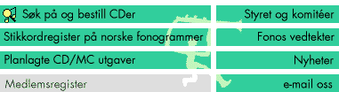

Dette skjemaet brukes til å søke i FONOs medlemsbase på SN Horisont (TM). Man kan ta ut lister etter ulike kriterier og i ulike formater.
Navn på medlem:
HTML-dokument HTML-dokument med all informasjon listet, velegnet til print
Kontaktperson Telefon Adresse
alfabetisk etter registreringsdato, siste registrering først
![[SN Horisont]](http://www.sn.no/img/horisont.gif)